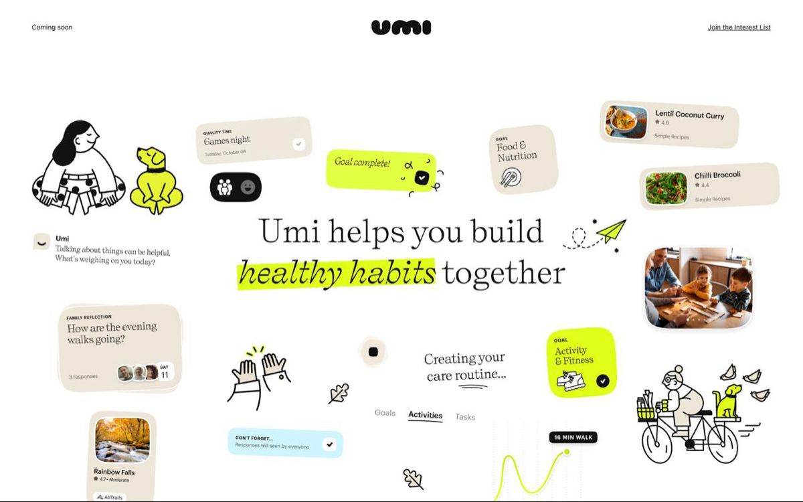
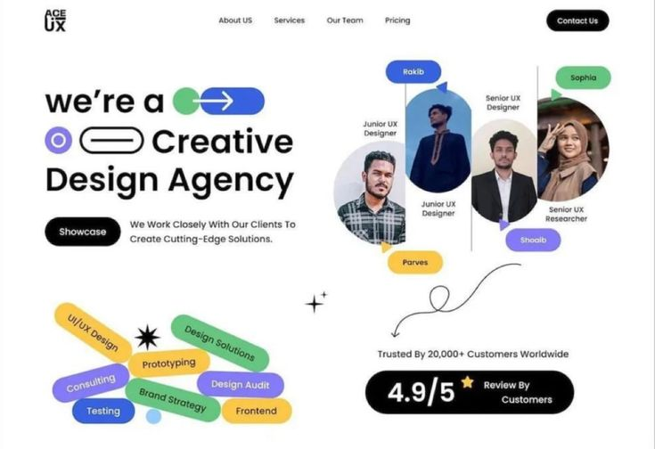
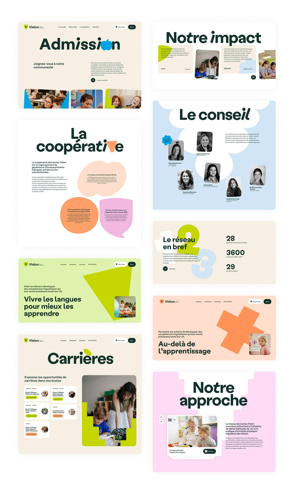
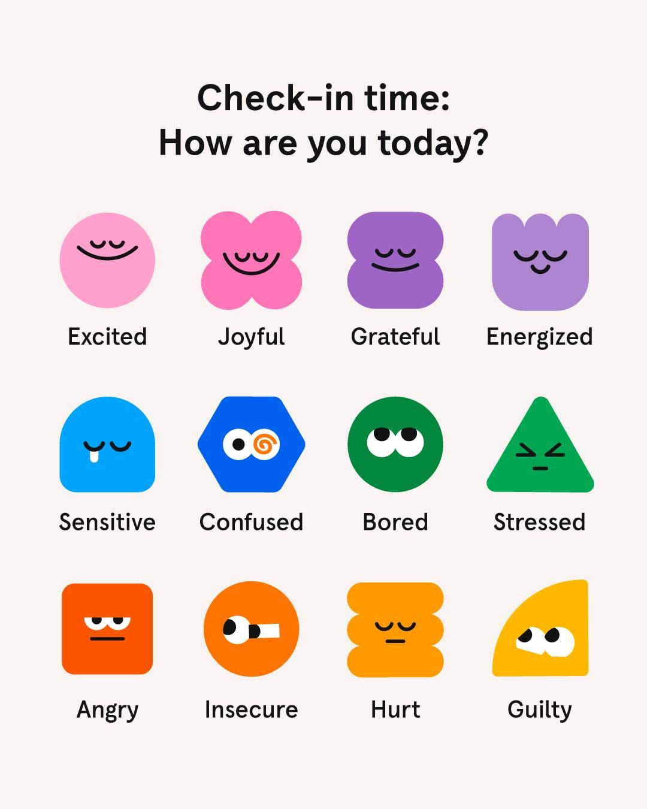
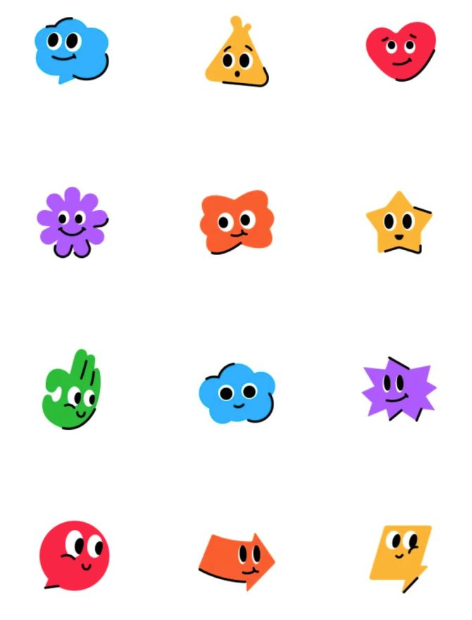
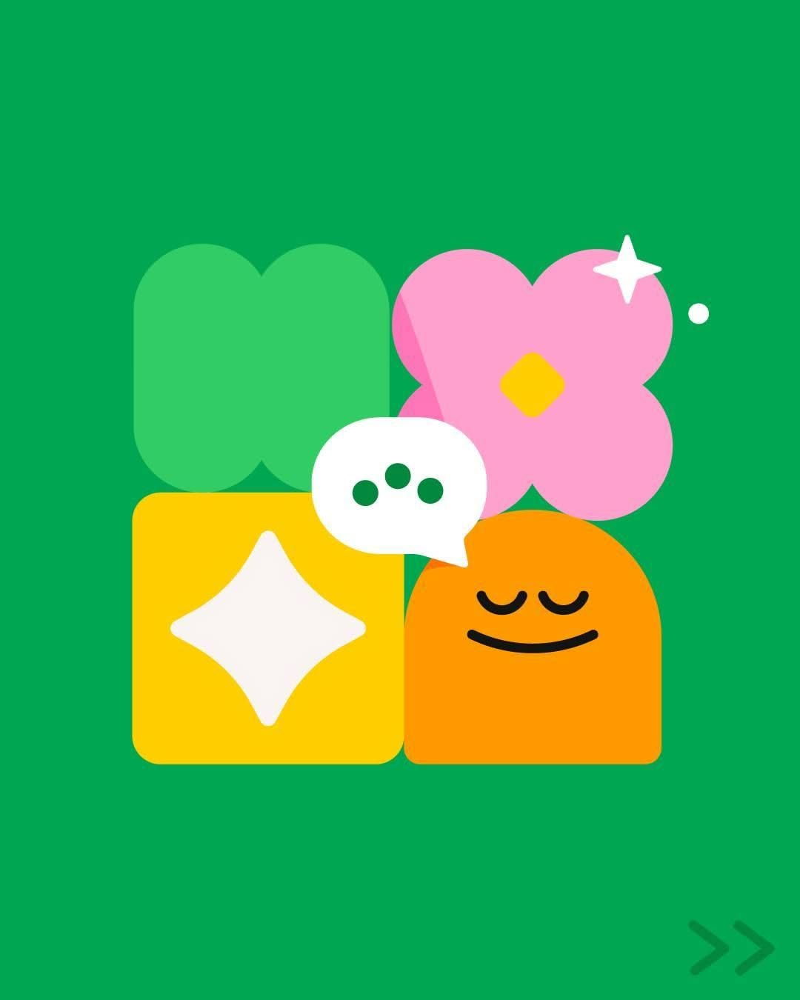
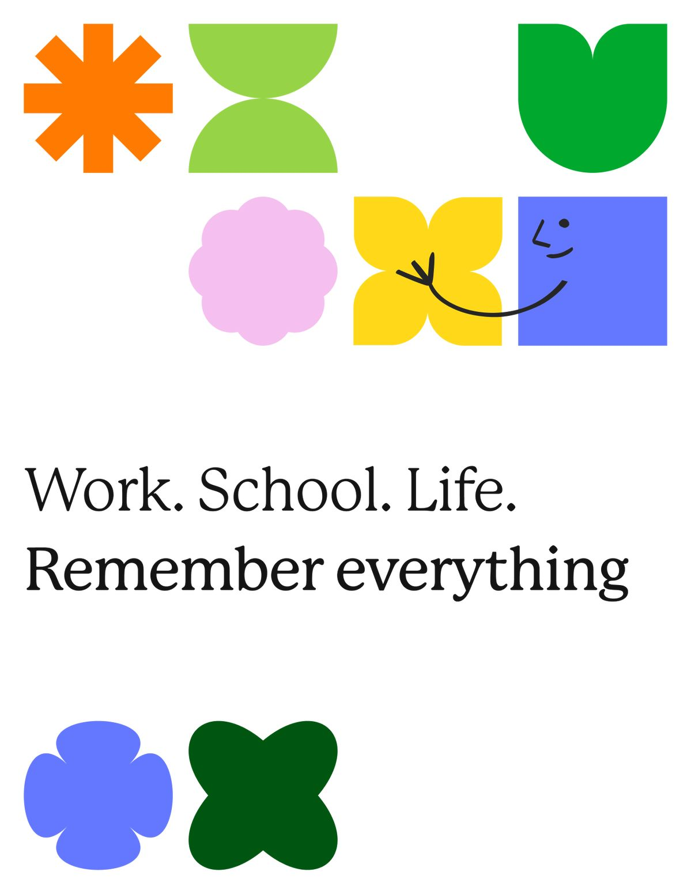
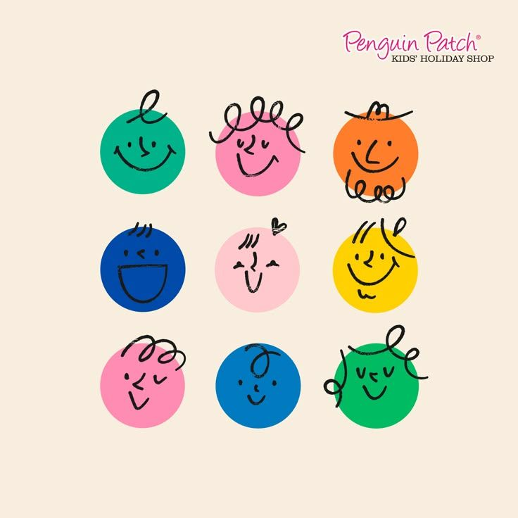

01 / COMMUNITY
一起住
把日常，过成共同生活
分享一张餐桌，也为自己的生活保留空间。
一张餐桌，一场对话，一个想动手做的点子。
与好奇的人相遇，把生活过成自己的样子。
706 社区视觉与交互提案 · 内容为演示，非正式活动或报名入口
不用一次理解整个社区。
先选一个你想参与的方向。
分享一张餐桌，也为自己的生活保留空间。
好奇心是开场白，认真倾听是下一步。
找到同路的人，把兴趣变成共同的实践。
脸型、头发、眼睛、鼻子、嘴巴和颜色都是独立 SVG 零件。换一组，也可以挑一个慢慢改。
逐个调整组件
每次生成都从各零件库独立抽取；当前组合可以下载为可编辑的矢量文件。
点选一个角色，拆开看看它由哪些零件组成。
我们把参与路径放在明处：先了解，再选择，最后决定是否迈出那一步。
生活、对话或共同创作，从一个具体兴趣开始。
正式上线时，每个项目列明地点、时间、费用与参与方式。
不自动报名，不催促决定，给每个人选择的空间。
706 保留色彩线索；布局、文字层级与交互按这组新参考重新建立。以下为设计提案，不是图片中的实测 CSS。
暖白承载内容，墨绿承担文字。青柠标记主行动；粉、浅蓝与杏橙分配给主题。避免每个模块都成为视觉主角。
标题64/40/22px，正文16px、1.75行高。手机38/28/22px。标题、说明、行动连续排列；长文宽度不超过36em。
1200px、12列、24px沟槽；手机20px边距。花瓣与面孔留在图形区，正文使用稳定左对齐。卡片20px，标签胶囊形。
用一个两行标题、一段短说明和一个主行动建立阅读顺序；图形集中在右侧构图。
让首次到访者知道这里与自己有什么关系，然后再探索丰富内容。
以暖白和墨绿承载阅读，社区绿用于身份，青柠用于主要行动，粉/蓝/杏橙分配给不同内容主题。
色彩保留人的活力，但不会让每块内容都争夺第一眼。
花瓣、对话泡与圆形用于标识和小型角色；正文仍在稳定网格中左对齐，不塞进不规则轮廓。
图形提供情绪，规则的文本区域承担理解任务。
取消自动跑马灯和长入场；只对悬停、选择与展开提供短反馈，并支持键盘与reduce。
用户可以按照自己的节奏看内容，辅助动画只解释刚才发生的操作。
交互提案：hover 180ms，面板220ms ease-out。无自动跑马灯与长入场，状态改变可用键盘操作。参考图动效未知。
点击查看原始图片。每张图各取所长，
共同构成这次调整的依据。

REFERENCE 01 ↗
中心命题、生活线索与有温度的短卡片

REFERENCE 02 ↗
左文右图、明确行动入口与胶囊标签

REFERENCE 03 ↗
主要布局参考：暖底、墨绿字、分区配色与规整正文

REFERENCE 04 ↗
几何形与情绪之间建立可读的对应

REFERENCE 05 ↗
简单轮廓与有性格的表情

REFERENCE 06 ↗
绿色主场与粉、黄、橙的有序组合

REFERENCE 07 ↗
大留白、几何语法与文字层次

REFERENCE 08 ↗
少量手绘线条为几何面孔增加亲近感